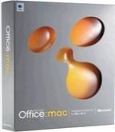

Microsoft Office for Windows started in October 1990 as a bundle of three applications designed for Microsoft Windows 3.0: Microsoft Word for Windows 1.1, Microsoft Excel for Windows 2.0 and Microsoft PowerPoint for Windows 2.0. Microsoft Office for Windows 1.5 updated the suite with Microsoft Excel 3.0. Version 1.6 added Microsoft Mail for PC Networks 2.1 to the bundle.
Microsoft Office 3.0 Microsoft Office 3.0, also called Microsoft Office 92, was released on August 30, 1992 and contained Word 2.0, Excel 4.0, PowerPoint 3.0 and Mail 3.0. It was the first version of Office also released on CD-ROM. In 1993, The Microsoft Office Professional was released, which added Microsoft Access 1.1.
Microsoft Office 4.x
Microsoft Office 4.0 was released containing Word 6.0, Excel 4.0a, PowerPoint 3.0 and Mail in 1993. Word's version number jumped from 2.0 to 6.0 so that it would have the same version number as the MS-DOS and Macintosh versions (Excel and PowerPoint were already numbered the same as the Macintosh versions).
Microsoft Office 4.2 for Windows NT was released in 1994 for i386, Alpha, MIPS and PowerPC architectures, containing Word 6.0 and Excel 5.0 (both 32-bit, PowerPoint 4.0 (16-bit), and Microsoft Office Manager 4.2 (the precursor to the Office Shortcut Bar).
Microsoft Office 95 and 97
Microsoft Office 95 was released on August 24, 1995. Software version numbers were altered again to create parity across the suite—every program was called version 7.0 meaning all but Word missed out versions. It was designed as a fully 32-bit version to match Windows 95. Office 95 was available in two versions, Office 95 Standard and Office 95 Professional. The standard version consisted of Word 7.0, Excel 7.0, PowerPoint 7.0, and Schedule+ 7.0. The professional edition contained all of the items in the standard version plus Microsoft Access 7.0. If the professional version was purchased in CD-ROM form, it also included Bookshelf.
The logo used in Office 95 returns in Office 97, 2000 and XP. Microsoft Office 98 Macintosh Edition also uses a similar logo.
Microsoft Office 97 (Office 8.0) included hundreds of new features and improvements, such as introducing command bars, a paradigm in which menus and toolbars were made more similar in capability and visual design. Office 97 also featured Natural Language Systems and grammar checking. Office 97 was the first version of Office to include the Office Assistant. In Brazil, it was also the first version to introduce the Registration Wizard, a precursor to Microsoft Product Activation.
Microsoft Office 2000 to 2003
Microsoft Office 2000 (Office 9.0) introduced adaptive menus, where little-used options were hidden from the user. It also introduced a new security feature, built around digital signatures, to diminish the threat of macro viruses. Office 2000 automatically trusts macros (written in VBA 6) that were digitally signed from authors who have been previously designated as trusted. The Registration Wizard, a precursor to Microsoft Product Activation, remained in Brazil and was also extended to Australia and New Zealand, though not for volume-licensed editions. Academic software in the United States and Canada also featured the Registration Wizard.
Microsoft Office XP (Office 10.0 or Office 2002) was released in conjunction with Windows XP, and was a major upgrade with numerous enhancements and changes over Office 2000. Office XP introduced the Safe Mode feature, which allows applications such as Outlook to boot when it might otherwise fail by bypassing a corrupted registry or a faulty add-in. Smart tag is a technology introduced with Office XP in Word and Excel and discontinued in Office 2010. Office XP includes integrated voice command and text dictation capabilities, as well as handwriting recognition. It was the first version to require Microsoft Product Activation worldwide and in all editions as an anti-piracy measure, which attracted widespread controversy. Product Activation remained absent from Office for Mac releases until it was introduced in Office 2011 for Mac.
Microsoft Office 2003 (Office 11.0) was released in 2003. It featured a new logo. Two new applications made their debut in Office 2003: Microsoft InfoPath and OneNote. It is the first version to use new, more colorful icons. Outlook 2003 provides improved functionality in many areas, including Kerberos authentication, RPC over HTTP, Cached Exchange Mode, and an improved junk mail filter.
Microsoft Office 2007 Microsoft Office 2007 (Office 12.0) was released in 2007. Office 2007's new features include a new graphical user interface called the Fluent User Interface, replacing the menus and toolbars that have been the cornerstone of Office since its inception with a tabbed toolbar, known as the Ribbon; new XML-based file formats called Office Open XML; and the inclusion of Groove, a collaborative software application.
Microsoft Office 2010
Microsoft Office 2010 (Office 14.0, because Microsoft skipped 13.0) was finalized on April 15, 2010 and made available to consumers on June 15, 2010. The main features of Office 2010 include the backstage file menu, new collaboration tools, a customizable ribbon, protected view and a navigation panel. This is the first version to ship in 32-bit and 64-bit variants. Microsoft Office 2010 featured a new logo, which resembled the 2007 logo, except in gold, and with a modification in shape.
Microsoft released Service Pack 1 for Office 2010 on June 28, 2011 and Service Pack 2 on July 16, 2013.
Microsoft Office 2013
A technical preview of Microsoft Office 2013 (Build 15.0.3612.1010) was released on January 30, 2012, and a Customer Preview version was made available to consumers on July 16, 2012. It sports a revamped application interface; the interface is based on Metro, the interface of Windows Phone and Windows 8. Microsoft Outlook has received the most pronounced changes so far; for example, the Metro interface provides a new visualization for scheduled tasks. PowerPoint includes more templates and transition effects, and OneNote includes a new splash screen. On May 16, 2011, new images of Office 15 were revealed, showing Excel with a tool for filtering data in a timeline, the ability to convert Roman numerals to Arabic numerals, and the integration of advanced trigonometric functions. In Word, the capability of inserting video and audio online as well as the broadcasting of documents on the Web were implemented. Microsoft has promised support for Office Open XML Strict starting with version 15, a format Microsoft has submitted to the ISO for interoperability with other office suites, and to aid adoption in the public sector. This version can read and write ODF 1.2 (Windows only).
On October 24, 2012, Office 2013 Professional Plus was released to manufacturing and was made available to TechNet and MSDN subscribers for download. On November 15, 2012, the 60-day trial version was released for public download. Office 2013 was released to general availability on January 29, 2013.
Service Pack 1 for Office 2013 was released on February 25, 2014.
Microsoft Office 2016 On January 22, 2015, the Microsoft Office blog announced that the next version of the suite for Windows desktop, Office 2016, was in development. On May 4, 2015, a public preview of Microsoft Office 2016 was released. Office 2016 was released for Mac OS X on July 9, 2015 and for Windows on September 22, 2015.
Microsoft Office 2019
On September 26, 2017, Microsoft announced that the next version of the suite for Windows desktop, Office 2019, was in development. On April 27, 2018, Microsoft released Office 2019 Commercial Preview for Windows 10.
Mac versions
Prior to packaging its various office-type Mac OS software applications into Office, Microsoft released Mac versions of Word 1.0 in 1984, the first year of the Macintosh computer; Excel 1.0 in 1985; and PowerPoint 1.0 in 1987. Microsoft does not include its Access database application in Office for Mac.
Microsoft has noted that some features are added to Office for Mac before they appear in Windows versions, such as Office for Mac 2001's Office Project Gallery and PowerPoint Movie feature, which allows users to save presentations as QuickTime movies. However, Microsoft Office for Mac has been long criticized for its lack of support of Unicode and for its lack of support for right-to-left languages, notably Arabic, Hebrew and Persian.
Early Office for Mac releases (1989–1994)
Microsoft Office for Mac was introduced for Mac OS in 1989, before Office was released for Windows. It included Word 4.0, Excel 2.2, PowerPoint 2.01, and Mail 1.37. It was originally a limited-time promotion but later became a regular product. With the release of Office on CD-ROM later that year, Microsoft became the first major Mac publisher to put its applications on CD-ROM.
Microsoft Office 1.5 for Mac was released in 1991 and included the updated Excel 3.0, the first application to support Apple's System 7 operating system. Microsoft Office 3.0 for Mac was released in 1992 and included Word 5.0, Excel 4.0, PowerPoint 3.0 and Mail Client. Excel 4.0 was the first application to support new AppleScript.
Microsoft Office 4.2 for Mac was released in 1994. (Version 4.0 was skipped to synchronize version numbers with Office for Windows) Version 4.2 included Word 6.0, Excel 5.0, PowerPoint 4.0 and Mail 3.2. It was the first Office suite for Power Macintosh. Its user interface was identical to Office 4.2 for Windows leading many customers to comment that it wasn't Mac-like enough. The final release for Mac 68K was Office 4.2.1, which updated Word to version 6.0.1, somewhat improving performance.
Microsoft Office 98 Macintosh Edition
Microsoft Office 98 Macintosh Edition was unveiled at MacWorld Expo/San Francisco in 1998. It introduced the Internet Explorer 4.0 web browser and Outlook Express, an Internet e-mail client and Usenet newsgroup reader. Office 98 was re-engineered by Microsoft's Macintosh Business Unit to satisfy customers' desire for software they felt was more Mac-like. It included drag–and-drop installation, self-repairing applications and Quick Thesaurus, before such features were available in Office for Windows. It also was the first version to support QuickTime movies.
Microsoft Office 2001 and v. X

Microsoft Office v. X box art
Microsoft Office 2001 was launched in 2000 as the last Office suite for the classic Mac OS. It required a PowerPC processor. This version introduced Entourage, an e-mail client that included information management tools such as a calendar, an address book, task lists and notes.
Microsoft Office v. X was released in 2001 and was the first version of Microsoft Office for Mac OS X. Support for Office v. X ended on January 9, 2007 after the release of the final update, 10.1.9 Office v.X includes Word X, Excel X, PowerPoint X, Entourage X, MSN Messenger for Mac and Windows Media Player 9 for Mac; it was the last version of Office for Mac to include Internet Explorer for Mac.
Office 2004
Microsoft Office 2004 for Mac was released on May 11, 2004. It includes Microsoft Word, Excel, PowerPoint, Entourage and Virtual PC. It is the final version of Office to be built exclusively for PowerPC and to officially support G3 processors, as its sequel lists a G4, G5 or Intel processor as a requirement. It was notable for supporting Visual Basic for Applications (VBA), which is unavailable in Office 2008. This led Microsoft to extend support for Office 2004 from October 13, 2009 to January 10, 2012. VBA functionality was reintroduced in Office 2011, which is only compatible with Intel processors.
Office 2008
Microsoft Office 2008 for Mac was released on January 15, 2008. It was the only Office for Mac suite to be compiled as a universal binary, being the first to feature native Intel support and the last to feature PowerPC support for G4 and G5 processors, although the suite is unofficially compatible with G3 processors. New features include native Office Open XML file format support, which debuted in Office 2007 for Windows, and stronger Microsoft Office password protection employing AES-128 and SHA-1. Benchmarks suggested that compared to its predecessor, Office 2008 ran at similar speeds on Intel machines and slower speeds on PowerPC machines. Office 2008 also lacked Visual Basic for Applications (VBA) support, leaving it with only 15 months of additional mainstream support compared to its predecessor. Nevertheless, five months after it was released, Microsoft said that Office 2008 was "selling faster than any previous version of Office for Mac in the past 19 years" and affirmed "its commitment to future products for the Mac."
Office 2011
Microsoft Office for Mac 2011 was released on October 26, 2010; it is the first version of Office for Mac to be compiled exclusively for Intel processors, dropping support for the PowerPC architecture. It features an OS X version of Outlook to replace the Entourage email client. This version of Outlook is intended to make the OS X version of Office work better with Microsoft's Exchange server and with those using Office for Windows. Office 2011 includes a Mac-based Ribbon similar to Office for Windows.
OneNote and Outlook release (2014)
Microsoft OneNote for Mac was released on March 17, 2014. It marks the company's first release of the note-taking software on the Mac. It is available as a free download to all users of the Mac App Store in OS X Mavericks.
Microsoft Outlook 2016 for Mac debuted on October 31, 2014. It requires a paid Office 365 subscription, meaning that traditional Office 2011 retail or volume licenses cannot activate this version of Outlook. On that day, Microsoft confirmed that it would release the next version of Office for Mac in late 2015.
Despite dropping support for older versions of OS X and only keeping support for 64-bit-only versions of OS X, these versions of OneNote and Outlook are 32-bit applications like their predecessors.
Office 2016
Main article: Microsoft Office 2016
The first Preview version of Microsoft Office 2016 for Mac was released on March 5, 2015. On July 9, 2015, Microsoft released the final version of Microsoft Office 2016 for Mac which includes Word, Excel, PowerPoint, Outlook and OneNote. It was immediately made available for Office 365 subscribers with either a Home, Personal, Business, Business Premium, E3 or ProPlus subscription. A non-Office 365 edition of Office 2016 was made available as a one-time purchase option on September 22, 2015.